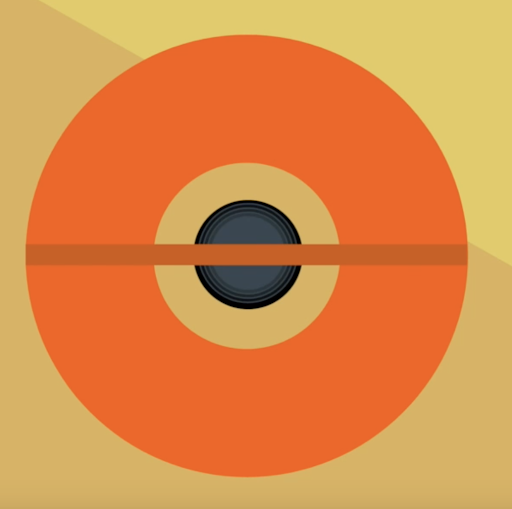
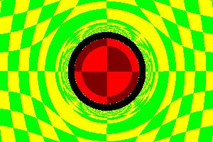
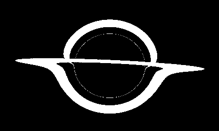
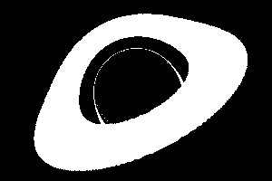
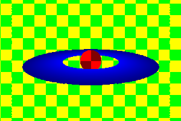
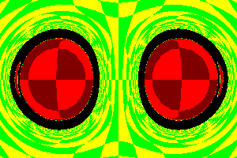
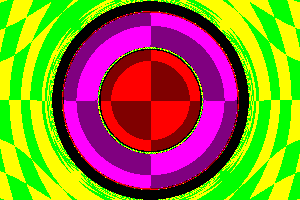

Black hole raytracer made using python from scratch. Rendered using image library PIL (Pillow).
Table of Contents
Abstract
For this final project for CS184, our group made a black hole raytracer utilizing Python's image library PIL (Pillow) to render the resulting images. The result was a black hole as shown through a surrounding accretion disk which is colored non-black. Our logic was based on both physics principles of black holes (ie/ using black hole mass to calculate event horizon radius for determining luminance) as well as graphics principles (ie/ ray casting/tracing).
The program is run simply through running the main function, which will render an image of a black hole and accretion disk utilizing object classes written, and save it to an image (png) file.
Technical Approach
Setup
Since this project involves using light rays cast from the camera to the scene, we had to use largely the same logic of raytracing
from project 3. However, writing it from scratch turned out to be a lot less tedious than porting over segments of code from project 3
itself. We created different classes for the objects needed (black hole and accretion disk objects) in the scene, as well as the tools needed for the renderer
(camera, renderer, world). Lastly, we utilized the logic for spectrum and ray objects from project 3 in order to write our own ray.py
and spectrum.py classes.
Our objects comprise of black hole and accretion disk objects. Their compositions are as shown:
class BlackHole:
def init(...):
self.origin
self.mass
self.radius
def hit_by_ray(...)
def get_luminance(...)
class Disk:
def init(...):
self.origin
self.mass
self.inner_radius
self.outer_radius
self.normal
def _intersects_plane(...)
def hit_by_ray(...)
def get_luminance(...)
Based on research regarding the physics of light bending behavior surrounding black holes, we were able to deduct the manner in which we would be able to visualize the black hole along with its accretion disk (comprising, in real life, of orbiting diffuse material but shown in our renders as a solid colored disk around the black hole sphere). We drew out the initial visualization using a painting application as shown:
|

|
Next, our group worked on the logic for writing our own renderer from scratch. This would allow us to do accurate raytracing
and to visualize our physics. Our final renderer in renderer.py utilizes the python image library Pillow (PIL) in order
to create a new image with inputted camera resolution (image size). Then we are able to cast rays from the camera into the world/scene,
allowing us to visualize the physics of light behavior around a black hole defined by a position, mass and radius. Our main
rendering pipeline is as such expressed by looping over the pixels:
for pixel in image:
camera.cast_ray(pixel)
luminance = ray.simulate_to_end(world.objects)
image.putpixel(pixel, luminance)
We did not happen to utilize subpixels and supersampling, and thus the renderer itself was quite simple and implemented on a per pixel sampling basis.
As for the actual raytracing logic, the simulate_to_end method in ray.py allowed us to utilize light physics as well as
time stepping along with the raycasting hit logic for the objects in the scene, the accretion disk and the black hole itself. simulate_to_end
outputs a Spectrum object which is the appropriate color for visualizing different objects.
INSERT DETAILS OF RAYTRACING HERE + PHYSICS EQUATIONS
Problems Encountered
Lessons Learned
Results
With colored grid
The following is a series of renderings of the black hole with a grid background showing the light interaction at different camera angles.
|

|
|
Black and white renderings
The following is a rendering of the black hole visualized using only the light interaction from the accretion disk.
|  |  |
Other renderings
The following are fun renderings we did just to test the effects of altering physics parameters on light interaction.
|

|

|

|